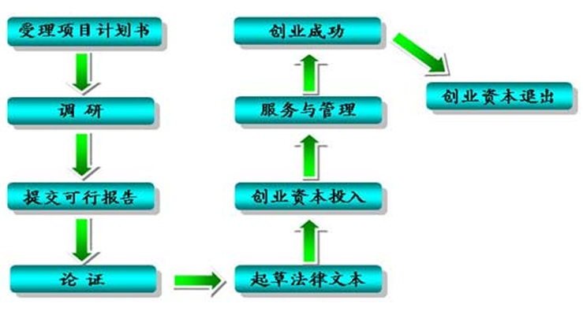
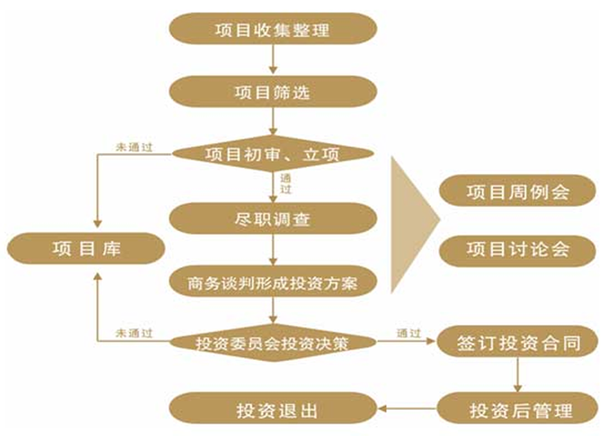

2016年10月20日 星期四 农历 丙申年
高级搜索
一、战略性新兴产业：包括生物医药、新能源、节能环保、新材料、信息产业、装备制造业；
二、大众消费与现代服务行业：包括地方特色产业、消费品与零售连锁、农业服务、文化传媒等；
三、矿产资源开发行业：包括开发设计、勘探开采、工程配套等。以及受益于工业化、城镇化和消费升级的细分行业龙头优势企业。
一、投资策略与理念：以投资成长型企业为主，合理搭配投资组合，力争风险最小化和利益最大化。
（一）加强与外地企业合作，提高资源互补和增值服务能力；
（二）建立引导基金网络，提升搜寻项目和联合投资的能力；
（三）内部专业化分工，提高项目识别、投资管理和服务的能力；
（四）早、中、晚三个阶段齐头并进，寻找有快速成长潜质的项目；
（五）不仅关注生物医药产业、制造业、高科技行业，同时还关注服务业等具有创新特质的领域；
（六）加强投资后的管理与服务能力，加强资源整合与战略合作；
（七）打造投资产业链和价值链，降低服务成本，提高服务效率。
二、退出策略:以上市和并购作为主要退出方式，力争以多种方式全面寻找退出通道，在获利基础上退出。
（一）以上市为导向，为所投资企业在世界范围内选择最佳的上市地点；
（二）积极推进以并购方式退出；
（三）产权或股权转让；
（四）企业出售；
（五）股份回购。

一、创业投资



联系电话：0851-84757178传真：0851-84757198电子邮件：gycytzvc@163.com技术支持：利民软件维护电话：4000855445 18908554445
联系地址：贵阳市金阳新区金朱西路2号中铝科技大厦B座10层
© 贵阳市创业投资有限公司 版权所有 2015 GYVC.CN All Rights Reserved. 黔ICP备11001488号-1